10 from-scratch sets, all visually different.
Classic balanced pass with large cobalt eyes and medium mustache.
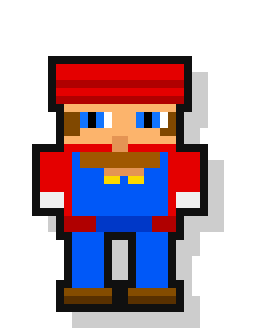
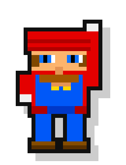
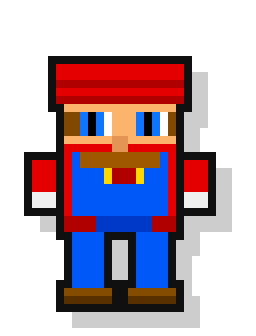
Chunkier proportions and wider hat with heavier mustache.
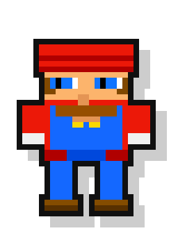
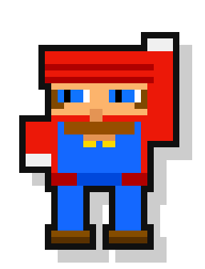
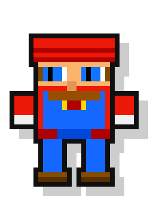
Taller frame with slimmer body and high bright eyes.
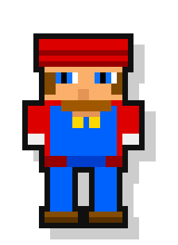
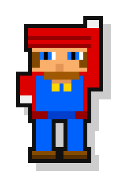
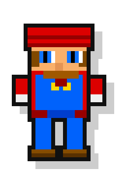
Short chibi silhouette with giant eyes and compact overalls.
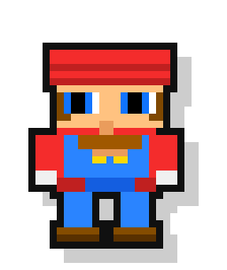
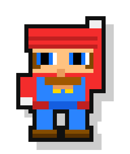
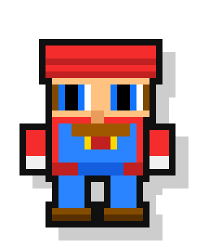
Wider lower body with thick boots and arcade blues.
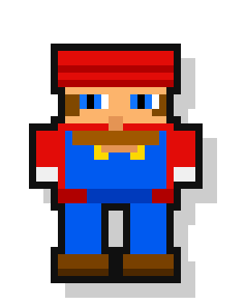
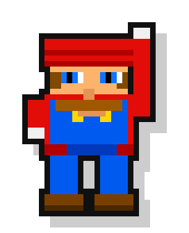
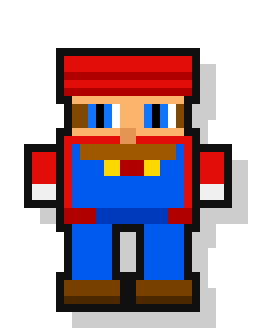
Heroic silhouette with pronounced hat brim and vivid irises.
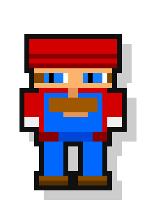
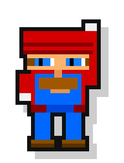
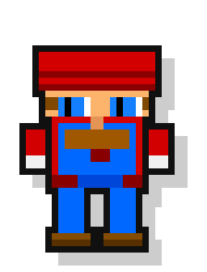
Comic-book contrast with darker shading and strong mustache lines.
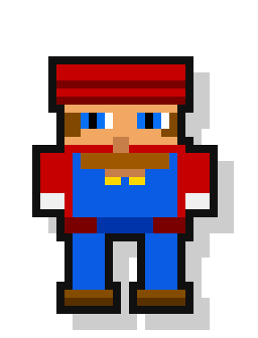
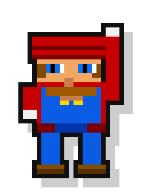
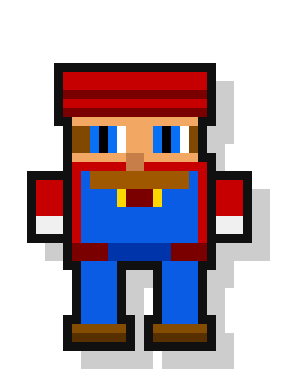
Party palette with neon red/blue accents and bright eyes.
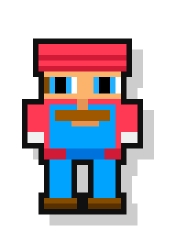
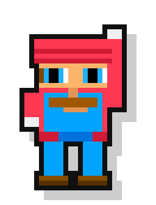
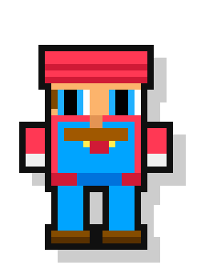
Retro darker tone with compact eyes and deep costume shading.
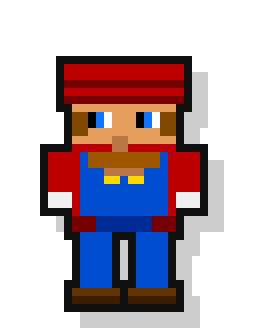
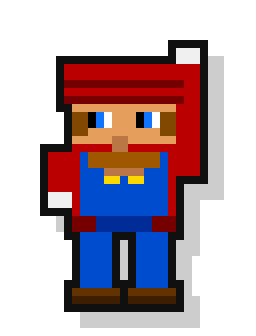
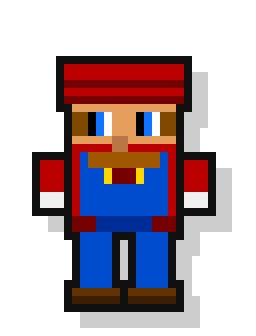
Final polished pass with broad hat, large irises, and clean costume lines.
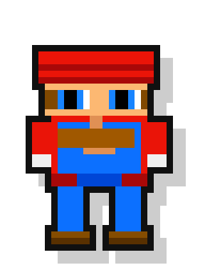
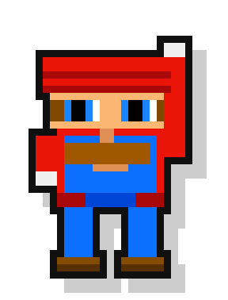
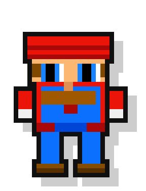